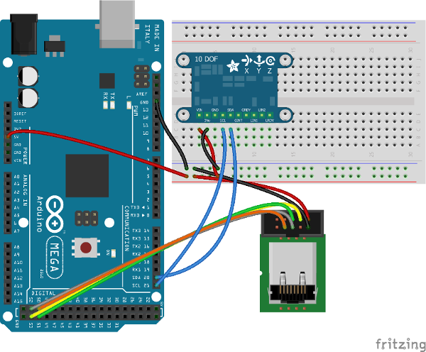
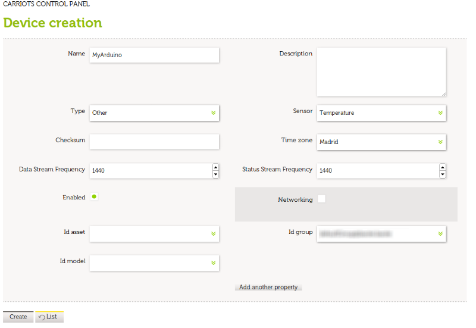
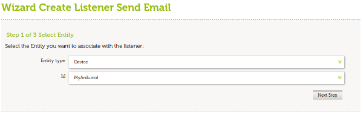
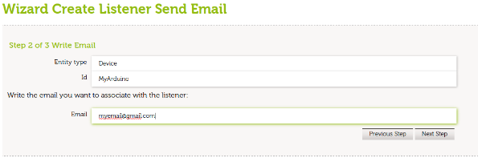
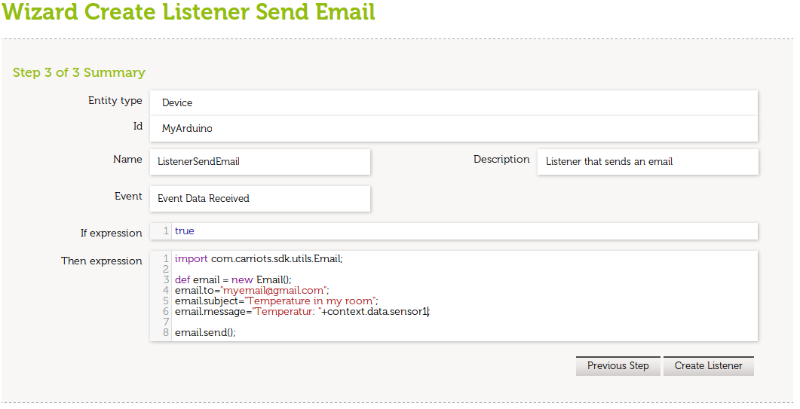

In this post we will show you how to receive a temperature email alert via Arduino.
Using Biicode lasote/carriots_stream block and Carriots service it’s very easy!

How does the lasote/carriots_stream block work?
- Instances CarriotsStreamClient passing your Carriots credentials and an Arduino Client instance.
- Adds the variables you need and call send_data()
1 2 | CarriotsStreamClient carriots_client(API_KEY, DEVICE_ID, client, Serial); carriots_client.add_variable("sensor1", "foo"); carriots_client.send_data(); |
Now, we’ll show how to use it with an example:
Step 1. Hardware used
- Ethernet Enc28j60 no-shield module for connecting to internet.
- Adafruit 10-DOF IMU for temperature measuring.
- Arduino Mega2560.
Step 2. Create a Carriots account and configure a device and a listener.
- Get a free account in Carriots service.
- Create a new device on Device Management section.

- Create a new Listener with the
Wizard Create ListeneronRules Managementsection, selectSend Emailand your device. In next step write the email account will receive the comunications.


- In the last step we can custom the email content.

Step 3. Create your biicode hive and upload to your Arduino
- New at biicode? Follow this tutorial for getting started with Arduino.
- You will need to pass an instance of Client for your hardware adapter to CarriotsStreamClient.
- Copy the following source code into a file in your block and fill your Carriots credentials API_KEY and DEVICE_ID.
- Execute these two commands:
1 2 | $ bii find $ bii arduino:upload |
And this is the source code example:
1 2 3 4 5 6 7 8 9 10 11 12 13 14 15 16 17 18 19 20 21 22 23 24 25 26 27 28 29 30 31 32 33 34 35 36 37 38 39 40 41 42 43 44 45 46 47 48 49 50 51 52 53 54 55 56 57 58 59 60 61 | #include "Arduino.h" #include <Wire.h> #include <adafruit/ada_10dof/adafruit_10dof.h> #include "ntruchsess/arduino_uip/uipethernet.h" #include "lasote/carriots_stream/carriots_stream_client.h" using namespace lasote; #define DEVICE_ID "*********************" //YOUR DEVICE ID #define API_KEY "***********************" //YOUR CARRIOT API KEY /* Assign a unique ID to the sensors */ Adafruit_BMP085_Unified bmp = Adafruit_BMP085_Unified(18001); //Our hardware adapter is Ethernet Enc28J60 HanRun module EthernetClient client; //Instance a carriots client for check weather CarriotsStreamClient carriots_client(API_KEY, DEVICE_ID, client, Serial); void setup(void) { //MAC init uint8_t mac[6] = {0x10,0x31,0x02,0x33,0x04,0x65}; Ethernet.begin(mac); delay(4000); if(!bmp.begin()){ /* There was a problem detecting the BMP085 ... check your connections */ Serial.print("Ooops, no BMP085 detected ... Check your wiring or I2C ADDR!"); while(1); } } void loop(void) { //Clear previous loop sensor variables carriots_client.reset(); /* Get a new sensor event */ sensors_event_t event; /* Display the pressure sensor results (barometric pressure is measure in hPa) */ bmp.getEvent(&event); float temperature; if (event.pressure){ bmp.getTemperature(&temperature); } char buf[6]; dtostrf(temperature, 2, 2, buf); //Put temperature to client in variable "sensor1" carriots_client.add_variable("sensor1", buf); //Send! carriots_client.send_data(); delay(60*1000); } |
You can use lasote/carriots_stream block and Carriots service for many purposes.
Let your imagination flow and stay tuned!
Stay tuned
Related Posts
Pingback: Proyectos final de curso | Aprendiendo Arduino()